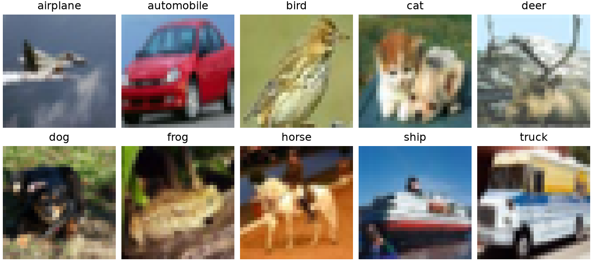
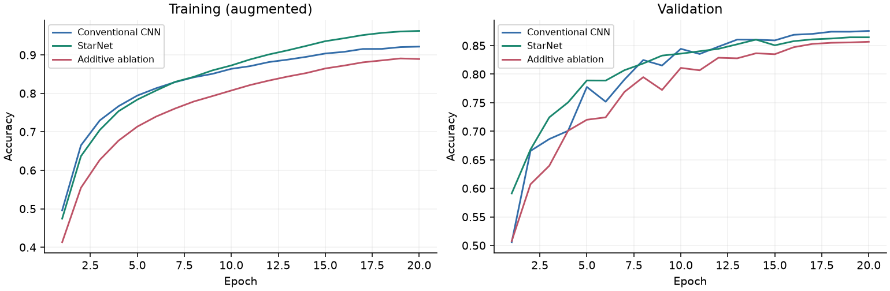
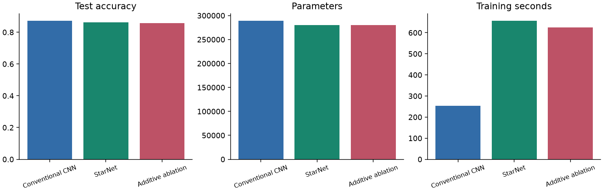
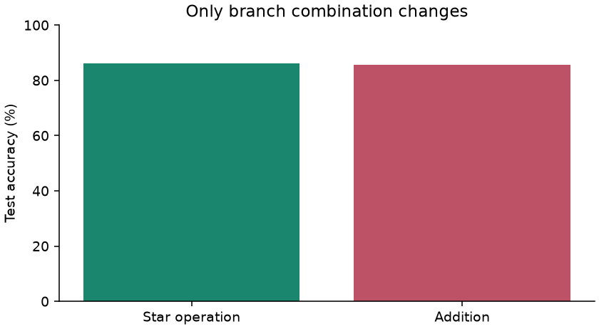
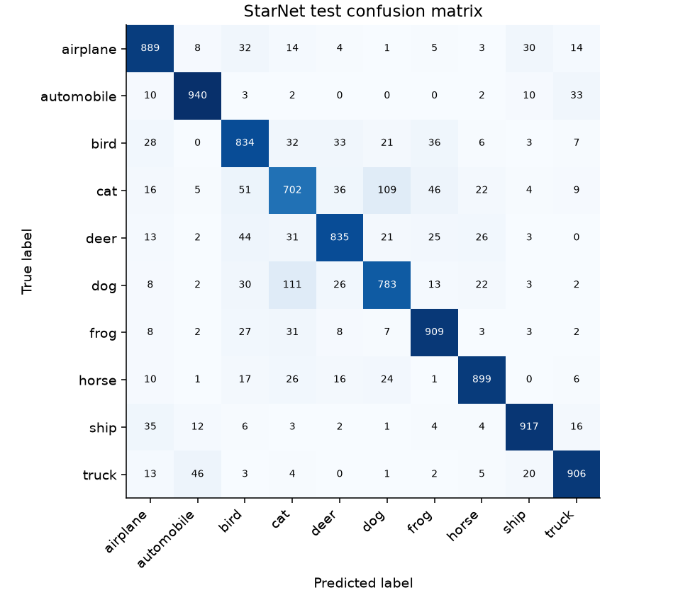

CISC3024 · PATTERN RECOGNITION
StarNet on CIFAR-10
Does multiplying feature branches improve image classification?
A local adaptation of Rewrite the Stars (CVPR 2024), compared with a conventional CNN and an additive ablation. All models train from scratch under the same protocol.
This study evaluates a compact CIFAR-10 adaptation. It does not reproduce the paper's ImageNet experiments. One seed and a limited training budget support descriptive comparisons only.
Algorithm
Conventional CNN
Conv / BN / ReLU / Pool]→Global average
10-class head
StarNet adaptation
24 channels→24 / 48 / 96 channels
1 / 1 / 2 Star blocks→BN / global average
10-class head
Inside the Star block
h = ReLU6(W₁z + b₁) ⊙ (W₂z + b₂)
output = x + DWConv₇×₇(BN(W₃h + b₃))
Two pointwise projections expand the channels by a factor of three. Their element-wise product introduces interactions between learned features without retaining an explicit expanded polynomial feature vector. The projection contracts the channels, then a second depthwise convolution and residual connection complete the block.
For one output coordinate, (w₁ᵀz)(w₂ᵀz) contains pairwise terms zᵢzⱼ. ReLU6 and repeated blocks make the actual network more complex than this simple quadratic illustration.
Dataset
CIFAR-10 contains color images at 32 × 32 resolution. A seeded, class-stratified split reserves validation images from the official training set.

Training results

Training metrics are measured on augmented batches while weights change. Validation metrics use unaugmented images after each epoch. Checkpoints are selected by validation accuracy; test data do not select epochs.
Model comparison
| Model | Test accuracy | Test loss | Parameters | MACs | Train time | Inference / image |
|---|

Star operation ablation
ReLU6(a) ⊙ bvs.Additive ablation
ReLU6(a) + b
Only the branch combination changes. Widths, depth, initialization seed, split, augmentation, optimizer, schedule, and training budget remain fixed. Both branches remain trainable, so parameter counts are identical.

Addition also changes activation scale and optimization behavior. This is evidence about the operator in this specific architecture and budget, not proof of universal superiority.
Confusion matrix

Prediction examples
First six correct and first six incorrect predictions in official test order. Confidence is the maximum softmax probability, not a calibrated reliability estimate.
Sources and reproducibility
Ma et al. · Rewrite the Stars · CVPR 2024
Official StarNet implementation · Official CIFAR-10 dataset
Raw dashboard data · Experiment configuration · Verification evidence
Word report · Markdown report · Reproduction instructions
Assignment repository publication pending. The official StarNet repository above belongs to the paper's authors.